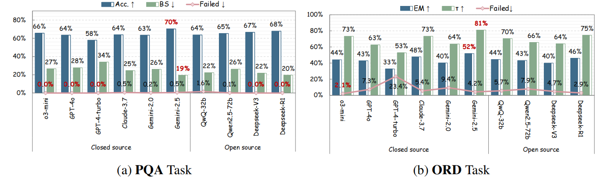

We constructed BioProBench to evaluate LLMs on tasks that actually matter for lab automation: procedural logic, safety checks, and quantitative reasoning.
🤖 BioProAgent: Neuro-Symbolic Grounding
Current LLM agents often generate protocols that look correct but are physically impossible to execute. BioProAgent solves this by introducing State-Augmented Planning via a Design-Verify-Rectify workflow.

Figure 1: The BioProAgent Architecture. The LLM (Neuro) proposes plans, while the FSM (Symbolic) verifies state transitions to prevent unsafe operations.
Key Innovations
- Design-Verify-Rectify: Automatically corrects errors (e.g., wrong temperatures) by checking against device specs.
- Semantic Symbol Grounding: Abstracts complex device schemas into symbols, reducing token consumption by ~6x.
Performance
Significantly outperforms GPT-4 baseline in success rate.